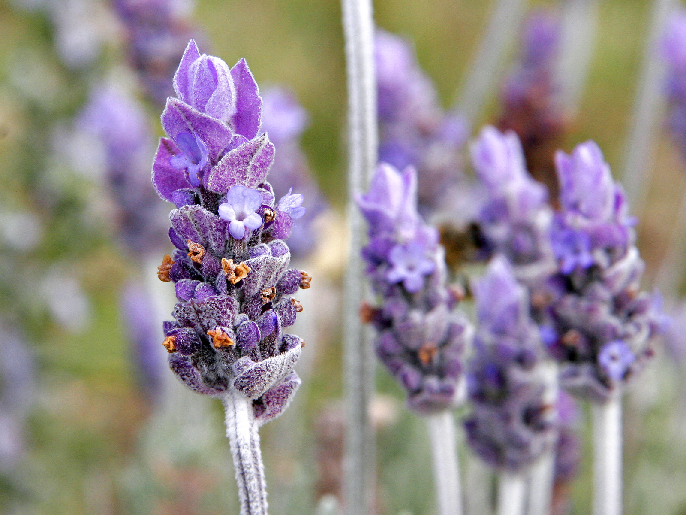

Lavandula spp.
common name: lavender
en español: lavanda
plant family: Lamiaceae (mint)
parts used: dried flower petals  from Wikimedia Commons by User Fir0002, GFDL 1.2
observations/description
dried petals
- light purple/greyish tubular flowers
- intense aroma, high notes, lifting
- aroma is extremely evocative of cleaning, laundry, relaxation, French countryside due to its ubiquitousness in commercial products
- this experience is mildly upsetting, as it plainly reveals to me the filter of societal conditioning through which all sense experiences and thoughts pass: we come to regard experiences as things that can be referenced, that have reference in an objective reality, but that reality is the human product of history, technology, culture, etc.
"Lavandula", Wikipedia
- flowers are contained in whorls, held on spikes rising above the foliage
- some species produce colored bracts at the tips of the inflorescences
- flowers may be blue, violet, or lilac in the wild species, occasionally blackish purple or yellowish
- corolla is tubular, usually with five lobes
distribution/conservation status
"Lavandula", Wikipedia
- native to Europe, primarily found across the drier, warmer regions of the Mediterranean, with an affinity for maritime breezes
- found on the Iberian Peninsula and around the entirety of the Mediterranean coastline (including the Adriatic coast, the Balkans, the Levant, and coastal North Africa), in parts of Eastern and Southern Africa and the Middle East, as well as in South Asia and on the Indian subcontinent
- many members of the genus are cultivated extensively in temperate climates
primary actions
The Yoga of Herbs, p. 205
- carminative, diuretic, antispasmodic
The Modern Herbal Dispensatory, p. 258
- nervine, analgesic, antifungal, aromatic, relaxant
notes from class, 3 Nov 2024
- antispasmodic, rubefacient, antiseptic, mild carminative, nervine, analgesic, sedative
Spiritual Herbalism, p. 134-5
- analgesic, anaphrodisiac, antibacterial, antidepressant, antifungal, anti-inflammatory, antiseptic, antispasmodic, aromatic, bitter, carminative, digestive, expectorant, nervine, rubefacient, sedative, stimulant, tonic, amphoteric
system affinities
digestive, nervous, integumentary, muscular, respiratory, immune
primary uses
The Modern Herbal Dispensatory, p. 258
- calming/relaxation, easing tension/anxiety
- lifting mood/mild antidepressant
- mild analgesic effect, effective on headaches soon after onset
- burn remedy
notes from class, 3 Nov 2024
- relieving muscle spasm (e.g., add to regimen if someone is taking magnesium for muscles)
- with witch hazel for antiseptic
- lavender/cayenne/feverfew salve for tension headaches
- essential oil alleviates pain of mild burns and bug bites
- secondary/supportive herb for sleep
- lifts mood, clears emotional stagnation, improves focus/energy/attention
- sitz bath for wound healing, especially postpartum healing
- use in digestive bitters
The New Age Herbalist, p. 65
- fragrant sachets
- treating burns, stings, headache, cough, colds
- healing cuts, strong antibacterial action
- used to kill diphtheria, typhoid bacilli, streptococcus, pneumococcus
- infustion or steam inhalation for chest infections, cough, cold
- sedative for calming anxiety, tension, digestive spasms, nervous headaches
- relaxes muscles and eases neuralgic/rheumatic pain
- vaginal douche for leukorrhea
Spiritual Herbalism, p. 134-5
- calms nerves and settles digestion
- good for asthma connected to anxiety
- antimicrobial properties: used for treating typhoid, staph, strep, diphtheria, flu, viruses
- nervine effects help balance depression, fear, irritability, nervousness, stress
- also used to treat pain, insomnia, hypertension, muscle spasms, fainting, dizziness, wounds, colic
- diluted essential oil can be used for
- mouthwash for bad breath
- douche/sitz bath for bacterial vaginosis or UTI
- hair rinse for scalp health
- natural insect repellant and treatment for insect bites
- soothe sore joints and muscles
energetics
The Yoga of Herbs, p. 205
- reduces pitta, kapha; vāta neutral
- pungent taste – pungent post-digestive effect
- cooling
The Modern Herbal Dispensatory, p. 258
- slightly warming
notes from class, 3 Nov 2024
- drying energy – likes dry climate, has tannins
Spiritual Herbalism, p. 134-5
- cool, dry, yang
pharmacology
notes from class, 3 Nov 2024
- volatile oils, flavonoids, rosmarinic acid, coumarins, tannins
The New Age Herbalist, p. 65
- volatile oils (up to 1.5%)
- linabol, linalyl acetate, lavendulyl acetate, terpinenol, cineole, camphor, borneol, pinene, limonene
- tannins, coumarins, flavonoids, triterpenoids
Spiritual Herbalism, p. 134-5
- flavonoids, essential oils, tannins, coumarins, triterpenoids
contraindications/pharmaceutical interactions/warnings
The Modern Herbal Dispensatory, p. 258
- no known contraindications
Spiritual Herbalism, p. 134-5
- do not use in large doses during pregnancy
preparations
- tisane
- macerate
- tincture
- essential oil
- vinegar
dosage
The Modern Herbal Dispensatory, p. 258 and Spiritual Herbalism, p. 134-5
- infusion: 4-8 oz, 1-4/day or as desired
- tincture: 1-3 mL, 3/day
- essential oil: apply neat for burns/bites, otherwise dilute 1 tbsp oil in 1 cup water or blend into a carrier oil for external use
extra information
notes from class, 3 Nov 2024
- genus name Lavandula from Latin lavare – to wash
- associated with prostitution (‘lavender ladies’ – from the middle ages)
Spiritual Herbalism, p. 134-5
- prostitutes used lavender to advertise/signal - but perhaps also for protection, as it can be used to treat many STIs
- used as a wound antiseptic prior to the first world war
- used as a strewing herb in the middle ages
- herbs were strewn on the floor so their scent would be released when stepped on
- lavender was believed to help protect against disease and repel moths
- women who wore corsets would use the aroma to revive after becoming faint
- lavender was burned in sick rooms during the bubonic plague to prevent the spread of disease
personal experiences/simples
tisane (1 tsp: 8 oz, 5-10 minutes), dried flowers
- surprised by how much of an affinity i felt towards it
- bitter/tannic notes underpin the floral aromatics and ground it
- it told me it is strong and helpful – relates to associations with relaxation
- it can do no wrong
macerate (1 tbsp: 8 oz, 6 hours), dried flowers
- i found it much more bitter/tannic than the tisane, tending toward soapiness
- i felt a strong nervine effect, not necessarily calming – i felt alert and present, almost uncomfortably so, but not anxious
- experiment with shorter steep
- all of this possibly because it should be 1 tbsp: 16 oz...
glycerite (1:6, 66.7% glycerin, 3 weeks), dried flowers
- deep dark amber brown color
- intense lavender smell
- intense lavender flavor: much earthier than tisane or macerate
- quite peppery and bitter, not unpleasant at all but very pronounced, no soapiness
- sweetness of the glycerin complements the bitter and pungent flavor very well
- mind feels very light and bright, not stimulating per se; perhaps a feeling of openness
witchcraft
notes from class, 3 Nov 2024
- purification (burn petals/bundle for smoke purification)
- connection to ancestors
- scrying/trancework
- protection – planted around gates/perimeter of property
- dreamwork with mugwort
- burned at childbirth
- used in honey jar spells – honey used to sweeten spell work
Spiritual Herbalism, p. 134-5
- association with mercury aids working with duality
- combines softness and fierceness, helpful for working through fear and seeing ghosts
- protects from repetitive negativity and harsh self-criticism
- teaches self-love and peace, promotes clarity and purification
- planetary influences: sun, mercury, air
personal experience
- strengthens, fortifies
- allows for anxieties to fall away: inner strength reduces their ability to take hold in the mind or even seem relevant, softens worry and paranoia
- can burn through anxieties/samskaras (the caustic element of the Lamiaceae), can help break unwanted thought patterns
- promotes inward retreat/reflection
recipes
sources
Easely, Thomas and Steven Horne. The Modern Herbal Dispensatory (2016)
Frawley, David and Vasant Lad. The Yoga of Herbs: An Ayurvedic Guide to Herbal Medicine (1986)
Goldberg Blackthorn, Samantha. Ace of Cups Herbal Medicine and Botanical Magic Herbal School (2024)
"Lavandula" on Wikipedia. Retrieved 6 May 2025.
Mabey, Richard et al. The New Age Herbalist (1988)
Rose, Karen M. The Art & Practice of Spiritual Herbalism (2022)